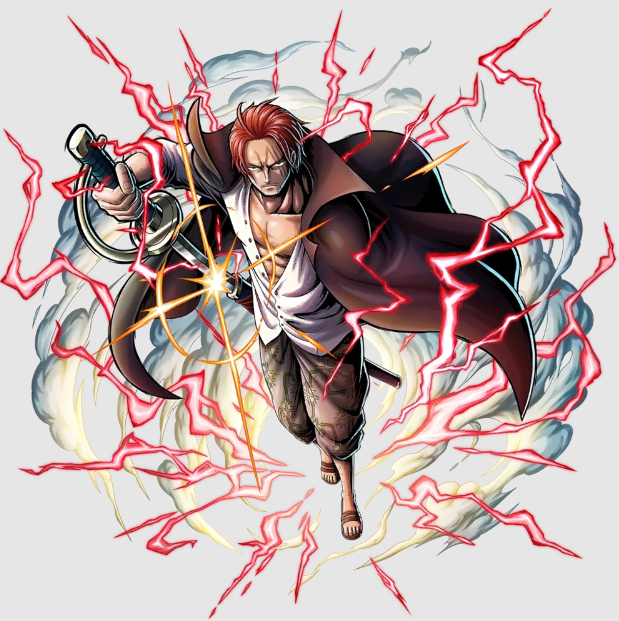

SHANKS O SUCESSOR
O homem mais próximo de Gol D. Roger

Shanks, "o Ruivo", ou simplesmente "Ruivo", é o chefe dos Piratas do Ruivo e um Yonkou que governa parte do Novo Mundo. Ele também é um ex-membro dos lendários Piratas do Roger, o único grupo a conquistar com sucesso a Grand Line, que foi onde começou como Pirata Aprendiz.